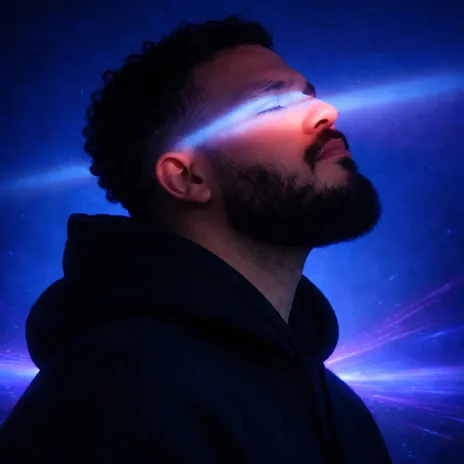

Electronic Press Kit
Prensa / EPK
Información oficial para medios, promotores y festivales.

Bio corta
J.Cärr
J.Cärr (@jcarr009) es productor y DJ de música electrónica de Panamá, enfocado en Christian EDM, Future Bass y Dubstep. Su música combina fe, emoción y energía electrónica mediante melodías emotivas, drops de alto impacto y experimentación sonora.
Datos rápidos
BasePanamá 🇵🇦
GénerosChristian EDM · Future Bass · Dubstep
SetHasta 90 minutos
DisponibilidadPanamá + internacional
Booking / prensajcarrbeat@gmail.com